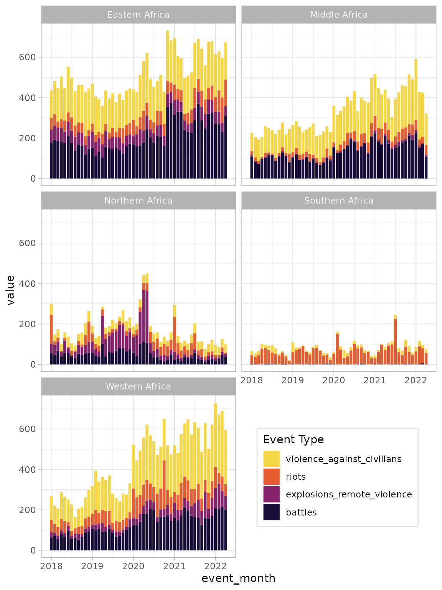

Generating counts of ACLED events
The generate_counts() function creates event counts by
event type and spacial and temporal units of analysis.
The required arguments are:
generate_counts(
data,
unit_id,
time_id,
time_target
)where data is ACLED event-level data,
unit_id is the spatial unit of analysis (e.g., country,
ADMIN1, region), time_id is the temporal unit (i.e.,
event_date normally), and time_target is the
temporal unit of aggregation (e.g., week, month, year). If
time_target = week, the ACLED week (starting on Saturday)
is used - see (time)[here would go the time vignette
link]
As an example, we can take the data for South America.
library(acledR)
acled_access(email = "acledexamples@gmail.com", key = "M3PWwg3DIdhHMuDiilp5") # This is an example, you will need to input your credentials.
#> $Success
#> [1] "Authorisation accepted"
df_sa <- acled_api(regions = c("South America"),
start_date = "2022-01-01",
end_date = "2022-04-30",
monadic = F)We can then generate event counts at the country-week level:
df_sa_agg_weekly <-
df_sa %>%
generate_counts(.,
unit_id = "country",
time_id = "event_date",
time_target = "week")This returns a tibble with columns for each event type in the data, as well as a column for the total events:
| country | event_week | protests | riots | strategic_developments | violence_against_civilians | battles | explosions_remote_violence | total_events |
|---|---|---|---|---|---|---|---|---|
| Argentina | 2022-01-01 | 21 | 3 | 0 | 0 | 0 | 0 | 24 |
| Argentina | 2022-01-08 | 19 | 2 | 0 | 0 | 0 | 0 | 21 |
| Argentina | 2022-01-15 | 43 | 6 | 1 | 0 | 0 | 0 | 50 |
| Argentina | 2022-01-22 | 27 | 5 | 0 | 0 | 0 | 0 | 32 |
| Argentina | 2022-01-29 | 30 | 2 | 0 | 1 | 0 | 0 | 33 |
| Argentina | 2022-02-05 | 33 | 2 | 0 | 0 | 0 | 0 | 35 |
We can also limit the request to certain event types. For example, we might only want political violence events:
df_sa_agg_weekly_pv <-
df_sa %>%
generate_counts(., unit_id = "country",
time_id = "event_date",
time_target = "week",
event_type = c("Battles",
"Violence against civilians",
"Explosions/Remote violence",
"Riots")) ## This needs to be changed, it is only mob violenceNow we only retain the requested event types and the total corresponds to these types only:
| country | event_week | protests | riots | strategic_developments | violence_against_civilians | battles | explosions_remote_violence | total_events |
|---|---|---|---|---|---|---|---|---|
| Argentina | 2022-01-01 | 21 | 3 | 0 | 0 | 0 | 0 | 24 |
| Argentina | 2022-01-08 | 19 | 2 | 0 | 0 | 0 | 0 | 21 |
| Argentina | 2022-01-15 | 43 | 6 | 1 | 0 | 0 | 0 | 50 |
| Argentina | 2022-01-22 | 27 | 5 | 0 | 0 | 0 | 0 | 32 |
| Argentina | 2022-01-29 | 30 | 2 | 0 | 1 | 0 | 0 | 33 |
| Argentina | 2022-02-05 | 33 | 2 | 0 | 0 | 0 | 0 | 35 |
If instead we wanted violent event counts by month rather than week,
we would simply swap time_target = week to
time_target = month:
df_sa_agg_monthly_pv <-
df_sa %>%
generate_counts(., unit_id = "country",
time_id = "event_date",
time_target = "month",
event_type = c("Battles",
"Violence against civilians",
"Explosions/Remote violence",
"Riots"))Examples
How have event types in Africa changed over time?
An analyst may be interested in how conflict event types have changed
over time within a continent. In this example, consider Africa since
2018. Since ACLED can code multiple regions within each continent, we
need to identify all regions that fall within Africa. We can see all
ACLED regions by calling the acledR::acled_regions
data.
Here, we see 5 regions in Africa, as well as the first date for which events were coded in each region.
acledR::acled_regions
#> # A tibble: 17 × 3
#> region region_name first_event_date
#> <dbl> <chr> <chr>
#> 1 1 Western Africa 1997-01-01
#> 2 2 Middle Africa 1997-01-01
#> 3 3 Eastern Africa 1997-01-01
#> 4 4 Southern Africa 1997-01-05
#> 5 5 Northern Africa 1997-01-01
#> 6 7 South Asia 2010-01-01
#> 7 9 Southeast Asia 2010-01-01
#> 8 11 Middle East 2015-01-01
#> 9 12 Europe 2018-01-01
#> 10 13 Caucasus and Central Asia 2017-01-01
#> 11 14 Central America 2018-01-01
#> 12 15 South America 2018-01-01
#> 13 16 Caribbean 2018-01-01
#> 14 17 East Asia 2018-01-01
#> 15 18 North America 2018-01-01
#> 16 19 Oceania 2021-01-01
#> 17 20 Antarctica 2021-03-19We can store these region names in a vector called
africa_regions and request data for each country within
these regions since 2018.
africa_regions <- c("Western Africa",
"Middle Africa",
"Eastern Africa",
"Southern Africa",
"Northern Africa")
df_africa <- acled_api(regions = africa_regions,
start_date = "2018-01-01",
end_date = "2022-04-30",
monadic = F)We can then generate event counts for each month by each region in Africa:
df_africa_monthly <-
df_africa %>%
generate_counts(., unit_id = "region",
time_id = "event_date",
time_target = "month",
event_type = c("Battles",
"Violence against civilians",
"Explosions/Remote violence",
"Riots"))We can create a stacked bar plot of event types over time by country
with ggplot2 by pivoting the data such that each
region-event type combination is one row and filtering out the
total_events event type:
library(ggplot2)
df_africa_monthly %>%
tidyr::pivot_longer(cols = -c(region, event_month)) %>%
dplyr::filter(name != "total_events") %>%
ggplot() +
geom_bar(aes(x = event_month,
fill = name,
y = value,
group = region),
position = "stack", stat = "identity") +
facet_wrap(~region, nrow = 3) +
scale_fill_viridis_d(option = "inferno",
begin = 0.1,
end = 0.9,
guide = guide_legend(title = "Event Type",
reverse = T)) +
theme_light() +
theme(legend.position = c(0.75, 0.15),
legend.background = element_rect(color = "gray90"))